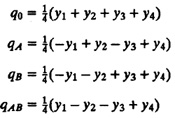
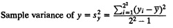
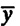
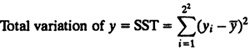
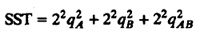

| Previous | Table of Contents | Next |
Substituting the four observations in the model, we get
y1 = q0 – qA – qB + qAB
y2 = q0 + qA – qB – qAB
y3 = q0 – qA + qB – qAB
y4 = q0 + qA + qB + qAB
Solving these equations for qi’s, we get

Notice that the expressions for qA, qB, and qAB are linear combinations of the responses such that the sum of the coefficients is zero. Such expressions are called contrasts.
Also notice that the coefficients of yi’s in the equation for qA are identical to the levels of A listed in Table 17.2. Thus, qA can be obtained by multiplying the columns A and y in the table. Ibis is also true for qB and qAB, both of which can be obtained by multiplying the respective level columns with the response column. Ibis observation leads us to the sign table method for calculating effects, which is described next.
| TABLE 17.3 Sign Table Method of Calculating Effects In a 22 Design | ||||
|---|---|---|---|---|
| I | A | B | AB | y |
| 1 | –1 | –1 | 1 | 15 |
| 1 | 1 | –1 | –1 | 45 |
| 1 | –1 | 1 | –1 | 25 |
| 1 | 1 | 1 | 1 | 75 |
| 160 | 80 | 40 | 20 | Total |
| 40 | 20 | 10 | 5 | Total/4 |
For a 22 design, the effects can be computed easily by preparing a 4 × 4 sign matrix as shown in Table 17.3. The first column of the matrix is labeled I, and it consists of all 1’s. The next two columns, titled A and B, contain basically all possible combinations of –1 and 1. The fourth column, labeled AB, is the product of the entries in columns A and B. The four observations are now listed in a column vector next to this matrix. The column vector is labeled y and consists of the response corresponding to the factor levels listed under columns A and B.
The next step is to multiply the entries in column I by those in column y and put their sum under column I. The entries in column A are now multiplied by those in column y and the sum is entered under column A. This operation of column multiplication is repeated for the remaining two columns of the matrix.
The sums under each column are divided by 4 to give the corresponding coefficients of the regression model. Generally, 1 is not explicitly written out in the matrix entries. The plus or minus sign is enough to denote 1 or –1, respectively.
The importance of a factor is measured by the proportion of the total variation in the response that is explained by the factor. Thus, if two factors explain 90 and 5% of the variation of the response, the second factor may be considered unimportant in many practical situations.
The sample variance of y can be computed as follows:

Here,  denotes the mean of responses from all four experiments. The numerator on the right-hand side of the above equation is called the total variation of y or Sum of Squares Total (SST):

For a 22 design, the variation can be divided into three parts:

Before presenting a derivation of this equation, it is helpful to understand its meaning. The three parts on the right-hand side represent the portion of the total variation explained by the effect of A, B, and interaction AB, respectively. Thus, 22q2A is the portion of SST that is explained by the factor A. It is called the sum of squares due to A and is denoted as SSA. Similarly, SSB is 22q2B and SSAB (due to interaction AB) is 22qAB2. Thus,
SST = SSA + SSB + SSAB
These parts can be expressed as a fraction; for example,
When expressed as a percentage, this fraction provides an easy way to gauge the importance of the factor A. The factors which explain a high percentage of variation are considered important.
It must be pointed out that variation is different from variance. Thus, a factor that explains 60% of the variation may or may not explain 60% of the total variance of y. The percentage of variance explained is rather difficult to compute. The percentage of variation, on the other hand, is easy to compute and easy to explain to decision makers.
A derivation of Equation (17.1) now follows. Readers not interested in mathematical details may skip to the example following the derivation.
| Previous | Table of Contents | Next |